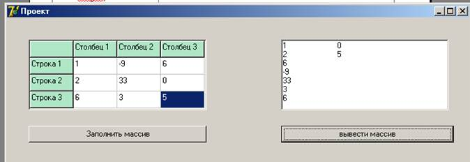

Компонент TStringGrid - таблица строк
Компонент TStringGrid предназначен для создания таблиц, в ячейках которых располагаются произвольные текстовые строки. Он является прямым потомком TDrawGrid, от которого им унаследовано большинство свойств и методов.
Таблица делится на две части - фиксированную и рабочую. Фиксированная служит для показа заголовков столбцов/рядов и для ручного управления их размерами. Обычно фиксированная часть занимает крайний левый столбец и самый верхний ряд таблицы, однако с помощью свойств FixedCols и FixedRows можно задать другое количество фиксированных столбцов и рядов (если эти свойства имеют 0, таблица не содержит фиксированной зоны). Рабочая часть - это остальная часть таблицы. Она может содержать произвольное количество столбцов и рядов, более того, эти величины могут изменяться программно. Рабочая часть может не умещаться целиком в пределах окна компонента, в этом случае в него автоматически помещаются нужные полосы прокрутки. При прокрутке рабочей области фиксированная область не исчезает, но меняется ее содержимое - заголовки строк и рядов.
Центральным свойством компонента является Cells - двухмерный массив ячеек, каждая из которых может содержать произвольный текст. Конкретная ячейка определяется парой чисел - номером столбца и номером ряда, на пересечении которых она находится (нумерация начинается с нуля). Свойство cells имеет тип String, поэтому программа может легко прочитать или записать содержимое нужной ячейки. Например:
Cells [1,1] := 'Левая верхняя ячейка рабочей зоны';
Количество ячеек по каждому измерению хранит пара свойств ColCount (количество столбцов) и RowCount (количество рядов). Значения-этих свойств и, следовательно, размеры таблицы могут меняться как на этапе разработки программы, так и в ходе ее работы, однако их значения должны быть как минимум на единицу больше соответственно значений в свойства FixedCois и FixedRows, определяющих размеры фиксированной зоны.
Содержимое ячеек можно редактировать. Для этого в таблице используется специализированный потомок редактора TMaskEdit.
|
property BorderStyle: TBorderStyle; |
Определяет рамку компонента: bsNone нет рамки; bsSingle - рамка толщиной 1 пиксель |
|
property Cells[ACol, ARow: Integer] :String; |
Определяет содержимое ячейки с табличными координатами (ACol, ARow) |
|
property Col: Longint; |
Содержит номер столбца сфокусированной ячейки |
|
property ColCount: Longing- |
Содержит количество столбцов таблицы |
|
property Cols[Index: Integer]: TStrings; |
Содержит все строки колонки с индексом Index |
|
property ColWidths[Index: Longint] : Integer; |
Содержит ширину столбца с индексом Index |
|
property DefaultColWidth: Integers; |
Содержит умалчиваемое значение ширины столбца |
|
property DefaultDrawing: Boolean; |
Разрешает/запрещает автоматическую прорисовку служебных элементов таблицы - фиксированной зоны, фона и прямоугольника сфокусированной ячейки и т. п. |
|
property DefaultRowHeight: Integers; |
Содержит умалчиваемую высоту рядов |
|
property EditorMode: Boolean; |
Разрешает/запрещает редактирование ячеек. игнорируется, если свойство Options включает goAlwayseShowEditor или не включает goEditing |
|
property FixedColor: TColor; |
Определяет цвет фиксированной зоны |
|
property FixedCois: Integers; |
Определяет количество столбцов фиксированной зоны |
|
property FixedRows: Integers; |
Определяет количество рядов фиксированной зоны |
|
property GridHeight: Integers; |
Содержит высоту таблицы |
|
property GridLineWidth: Integers; |
Определяет толщину линий, расчерчивающих таблицу |
|
property GridWidth: Integers; |
Содержит ширину таблицы |
|
property LeftCol: Longint; |
Содержит номер самого левого столбца, видимого в зоне прокрутки |
|
property Objects [ACols ARow: Integer] : TObject; |
Обеспечивает доступ к объекту, связанному с ячейкой (ACol, ARow) |
|
property Options: TGridOptions; |
Содержит параметры таблицы (см. ниже) |
|
property Row: Longing; |
Содержит номер ряда сфокусированной ячейки |
|
property RowCount: Longint; |
Содержит количество рядов таблицы |
|
property RowHeights[Index: Long int] : Integer; |
Содержит высоту ряда с индексом index |
|
property Rows[Index: Integer]: TStrings; |
Содержит все строки ряда с индексом Index |
|
type TScrollStyle = (ssNone, ssHorizontal, ssVertical, ssBoth) ; |
Определяет полосы прокрутки: ssNone -нет полос; ssHorizontal - в таблицу вставляется горизонтальная полоса; |
|
property ScrollBars: TScroll Style; |
ssVertical - вставляется вертикальная полоса; ssBoth - вставляются обе полосы |
|
TGridRect = record case Integer of 0: (Left,Top,Right,Bottom: Long int) ; 1: (TopLeft, BottomRight: TGridCoord) ; end; |
Определяет группу выделенных ячеек в координатах левая верхняя и правая нижняя ячейки(нумерация столбцов и рядов идет от нуля, включая столбцы и ряды фиксированной зоны). После выделения сфокусированной окажется правая нижняя ячейка |
|
property Selection: TGridRect; property TabStops[Index: Long int] : Boolean; |
Разрешает/запрещает выбирать столбец с индексом index при обходе ячеек клавишей Tab. Игнорируется, если Options не содержит goTabs |
|
property TopRow: Longint; |
Содержит номер самого верхнего ряда, видимого в прокручиваемой зоне ячеек |
|
property VisibleColCount: Integer; |
Содержит количество столбцов, полностью видимых в зоне прокрутки |
|
property VisibleRowCount: Integer; |
Содержит количество рядов, полностью видимых в зоне прокрутки |
Для компонента определен тип TGridOptions:
type
TGridOption = (goFixedVertLine, goFixedHorzLine, goVertLine, goHorzLine, goRangeSelect, goDrawFocusSelected, goRowSizing, goColSizing, goRowMoving, goColMoving, goEditing, goTabs, goRowSelect, goAlwaysShowEditor, goThumbTracking);
TGridOptions = set of TGridOptions;
Элементы множества TGridOptions имеют следующий смысл:
|
goFixedVertLine |
Столбцы фиксированной зоны разделяются вертикальными линиями |
|
goFixedHorzLine |
Ряды фиксированной зоны разделяются горизонтальными линиями |
|
goVertLine |
Столбцы рабочей зоны разделяются вертикальными линиями |
|
goHorzLine |
Ряды рабочей зоны разделяются горизонтальными линиями |
|
goRangeSelect |
Разрешено выделение нескольких ячеек. Игнорируется, если включен элемент goEdit |
|
goDrawFocus Selected |
Разрешено выделять сфокусированную ячейку так же, как выделенные |
|
goRowSizing goColSizing goRowMoviog |
Разрешено ручное (мышью) изменение высоты строк Разрешено ручное изменение ширины рядов Разрешено ручное перемещение рядов (нажать левую кнопку мыши на фиксированной ячейке перемещаемого ряда и, удерживая кнопку нажатой, переместить ряд на новое место) |
|
goColMoving goEditing |
Разрешено ручное перемещение столбца Разрешено редактирование ячейки. Игнорируется, если включен элемент goRowSelect. Редактирование начинается после щелчка мыши или нажатия клавиши F2 и завершается при щелчке по другой ячейке или нажатии клавиши Enter |
|
goTabs goRowSelect |
Разрешено обходить ячейки клавишей Tab (Shift+Tab) Обязывает выделять сразу все ячейки ряда и запрещает редактирование ячеек Разрешено редактировать сфокусированную ячейку: редактирование возможно после выбора ячейки клавишей Tab (Shift+Tab). Игнорируется, если не включен элемент goEditing |
|
goAlwaysShowEditorgoThumbTracking |
Разрешено обновление при прокрутке. Если этот элемент отсутствует, обновление ячеек произойдет только после окончания прокрутки |
Два метода класса могут оказаться полезными для процедуры прорисовки:
|
function CellRect(ACol, ARow: TRect; Longint): |
Возвращает прямоугольник ячейки по номерам столбца ACol и ряда Arow |
|
procedure MouseToCell(X, Y: Integer; var ACol, ARow: Longint); |
Возвращает табличные координаты ячейки ACol и arow по экранным координатам(X,У)точки |
Остальные методы рассчитаны на перекрытие в потомках и представляют интерес для разработчиков новых компонентов. Для программистов-пользователей важны следующие доступные компоненту события:
|
TMovedEvent = procedure (Sender: TObject; Fromlndex, Tolndex: Longint) of object; property OnColumnMoved: TMovedEvent; TDrawCellEvent; |
Возникает при перемещении столбца с индексом Fromlndex в положение, определяемое индексом ToIndex |
|
TGridDrawState = set of (gdSelected, gdFocused, gdFixed) ; TDrawCellEvent = procedure (Sender: TObject; Col, Row: Longint; Rect: TRect; State: TGridDrawState) of object-property OnDrawCell: |
Возникает при необходимости перерисовать ячейку с табличными координатами (Col, Row): Rect - прямоугольник прорисовки; State - состояние ячейки (gdSelected -ячейка выделена; gdFocused - ячейка сфокусирована; gdFixed - ячейка принадлежит фиксированной зоне таблицы). Для прорисовки используется табличное свойство Canvas |
|
GetEditEvent = procedure (Sender: TObject; ACol, ARow: |
Возникает при редактировании текста в ячейке с табличными координатами |
|
Longint; var Value: String) ofobject; property OnGetEditMask: TGetE ditEvent; |
(ACol.ARow). В параметре value обработчик должен вернуть шаблон для редактора TeditMask |
|
property OnGetEditText: TGetE ditEvent; |
Возникает при редактировании текста в ячейке с табличными координатами (ACol.ARow). В параметре value обработчик должен вернуть текст для редактора TEditMask (см. событие OmGetEditMask) |
|
property OnRowMoved: TMovedEvent; |
Возникает при перемещении ряда с индексом Fromindex в положение, определяемое индексом ToIndex (см. событие onColMoved) |
|
SelectCellEvent = procedure (Sender: TObject; Col, Row: Long int; var CanSelect: Boolean) of object; property OnSelectCell: TSe lectCellEvent; |
Возникает при попытке выделить ячейку с табличными координатами (col.Row). В параметре CanSelect обработчик сообщает о возможности выделения ячейки |
|
TSetEditEvent = procedure (Sender: TObject; ACol, ARow: Longint; const Value: String) of object; property OnSetEditText: TSetEditEvent; |
Возникает при завершении редактирования ячейки (ACol.ARow). В параметре value обработчик получает результат ввода или редактирования текста |
|
property OnTopLeftChanged: TNotifyEvent; |
Возникает после изменения значения ТоpRow или LeftCol в результате прокрутки рабочей зоны |
Пример.

Рисунок 1 – Пример использования компонента StringGrid для ввода элементов массива
Поместите на форму компонент StringGrid
Установите следующие свойства:
Таблица 1 – Свойства компонента StringGrid
|
Свойство |
Значение |
Пояснение |
|
Name |
StringGrid1 |
Имя |
|
Enabled |
True |
Реагирует ли на события, связанные с мышью, клавиатурой, таймером |
|
FixedCols |
1 |
Количество столбцов фиксированной области |
|
FixedRows |
1 |
Количество строк фиксированной области |
|
FixedColor |
clBackground |
Цвет фиксированной области |
|
ColCount |
4 |
Количество столбцов |
|
RowCount |
4 |
Количество строк |
|
Height |
105 |
Высота |
|
Width |
265 |
Ширина |
Поместите на форму компонент ListBox
Установите следующие свойства:
Таблица 2 – Свойства компонента ListBox
|
Свойство |
Значение |
Пояснение |
|
Name |
ListBox1 |
Имя |
|
Enabled |
True |
Реагирует ли на события, связанные с мышью, клавиатурой, таймером |
|
Columns |
3 |
Количество колонок |
|
Height |
105 |
Высота |
|
Width |
265 |
Ширина |
Поместите на форму компонент Button
Установите следующие свойства:
Таблица 3 – Свойства компонента Button
|
Свойство |
Значение |
Пояснение |
|
Name |
Batton1 |
Имя |
|
Enabled |
True |
Реагирует ли на события, связанные с мышью, клавиатурой, таймером |
|
Caption |
Заполнить массив |
Заголовок |
|
Height |
25 |
Высота |
|
Width |
265 |
Ширина |
Поместите на форму компонент Button
Установите следующие свойства:
Таблица 4 – Свойства компонента Button
|
Свойство |
Значение |
Пояснение |
|
Name |
Batton2 |
Имя |
|
Enabled |
True |
Реагирует ли на события, связанные с мышью, клавиатурой, таймером |
|
Caption |
Вывести массив |
Заголовок |
|
Height |
25 |
Высота |
|
Width |
265 |
Ширина |
Напишите следующие обработчики событий:
procedure TForm1.FormCreate(Sender: TObject); // Событие – создание формы
var i:integer;
begin
StringGrid1.ColCount:=4;
StringGrid1.RowCount:=4;
for i:=1 to 3 do begin
StringGrid1.Cells[i,0]:='Столбец '+IntToStr(i);
StringGrid1.Cells[0,i]:='Строка '+IntToStr(i);
end;
StringGrid1.Options:=[goFixedVertLine,goFixedHorzLine,goVertLine,goHorzLine,goRangeSelect,goEditing]; // Добавили свойство, позволяющее редактировать содержимое таблицы
end;
procedure TForm1.Button1Click(Sender: TObject); //событие – щелчок по кнопке 1
var i,j:integer;
begin
for i:=1 to 3 do begin
for j:=1 to 3 do begin
mas[i,j]:=StrToInt(StringGrid1.Cells[i,j]) ;
end;
end;
end;
procedure TForm1.Button2Click(Sender: TObject); //событие – щелчок по кнопке 2
var i,j:integer;
begin
ListBox1.Clear;
for i:=1 to 3 do begin
for j:=1 to 3 do begin
ListBox1.Items.Add(IntToStr(mas[i,j]));
end;
end;
end;